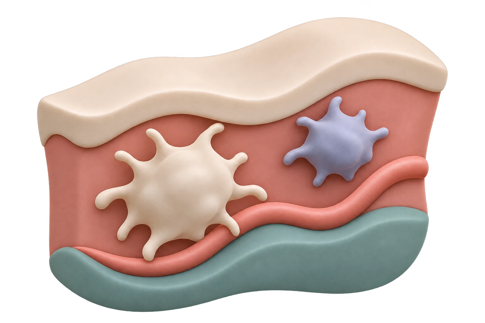
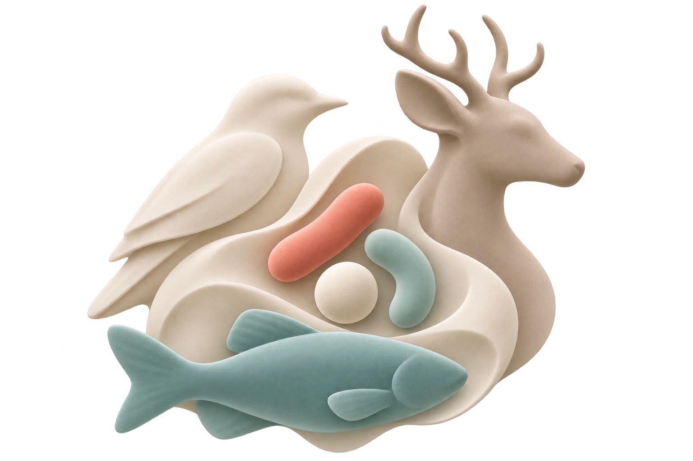

01 / Lymphoma
01 / Lymphoma림프종
장내미생물과 항암치료 반응 및 부작용
림프종 환자에서 장내미생물 군집의 구성과 기능을 항암치료 반응, 부작용 및 장기 예후와 함께 분석합니다. 치료 전후의 미생물 변화와 숙주의 면역반응을 조사해 예후 예측에 활용할 바이오마커와 항암치료의 효과를 높일 치료 표적을 연구합니다.
Explore Research ↗RESEARCH
질환별 마이크로바이옴 연구와 정밀영양 치료제 개발, 미생물 분리 배양 및 생태 연구를 수행합니다.
APPROACH
장내미생물 군집의 역할은 질병마다 서로 다른 맥락에서 연구하고 해석해야 합니다.
우리는 Host-microbiome interaction 및 작용 메커니즘에 대한 이해를 바탕으로 바이오마커를 찾고 이에 대한 치료제를 개발하고 있습니다.
다양한 국내 병원 임상 전문 연구진과 협력하여 환자의 마이크로바이옴 및 임상 데이터를 수집하고 이를 분석합니다.
Multi-omics, Bioinformatics, Clinical research질환의 임상적 맥락하에서 마이크로바이옴의 작용 원리를 탐색하고, 이를 바탕으로 치료적 개입 타겟을 선정합니다.
Culturomics, in vitro/vivo experiment, Biomarker장내미생물 군집의 기능적 특성을 바탕으로 AI모델을 개발하여 개인 맞춤형 정밀영양 개입을 통한 미생물 치료제를 개발합니다.
AI modeling, Precision nutrition, Drug developmentRESEARCH AREAS
01 / Lymphoma장내미생물과 항암치료 반응 및 부작용
림프종 환자에서 장내미생물 군집의 구성과 기능을 항암치료 반응, 부작용 및 장기 예후와 함께 분석합니다. 치료 전후의 미생물 변화와 숙주의 면역반응을 조사해 예후 예측에 활용할 바이오마커와 항암치료의 효과를 높일 치료 표적을 연구합니다.
Explore Research ↗ 02 / Neurodegenerative Diseases
02 / Neurodegenerative Diseases장내미생물과 신경퇴행성 질환의 발병 기전
파킨슨병과 치매에서 장내미생물의 기능 변화가 질환의 발생과 진행에 미치는 영향을 연구합니다. 숙주의 유전적 특성과 임상 정보, 뇌영상 및 병리지표를 함께 분석해 미생물과 숙주의 상호작용을 해석하고, 질환의 초기 단계에서 개입할 치료 표적을 찾습니다.
Explore Research ↗
03 / Allergy & Autoimmunity장내미생물에 의한 면역 교란과 알레르기 반응
만성 자발성 두드러기(CSU) 환자의 면역 특성과 장내미생물 군집을 분석해 미생물이 질환에 관여하는 환자군과 그 기능적 특성을 연구합니다. 미생물과 장상피 및 면역세포의 상호작용을 바탕으로 면역반응을 조절할 치료 표적을 탐색합니다.
Explore Research ↗ 04 / Microbiome Therapeutics
04 / Microbiome TherapeuticsAI 기반 개인 맞춤형 미생물 치료제 개발
대규모 한국인 코호트에서 개인별 미생물 보유 기능과 군집 특성을 분석하고, 이를 바탕으로 정밀영양 개입을 위한 AI 모델을 개발합니다. 개인마다 필요한 미생물 기능과 대사산물을 고려해 식이섬유 조합을 선정하고, 실제 발효 반응과 숙주 반응을 비교하는 연구를 계획하고 있습니다.
Explore Research ↗ 05 / Microbial Isolation & Culture
05 / Microbial Isolation & Culture미생물 분리 배양과 신종 발굴
환경과 사람의 장에서 미생물을 분리 배양하고, 유전체와 생리 특성을 분석해 새로운 종을 발굴합니다. 질환과 관련된 균주의 기질 이용과 대사산물 생성 특성을 조사해, 유전체에서 예측한 기능이 실제 배양에서 어떻게 나타나는지 연구합니다.
Explore Research ↗
06 / Microbial Ecology숙주의 먹이, 계통, 환경과 장내미생물 형성
야생동물의 장내미생물을 비교해 숙주의 먹이와 계통, 서식 환경이 군집 형성에 미치는 영향을 연구합니다. 특정 숙주에 정착하는 미생물과 여러 숙주에 분포하는 미생물의 차이를 분석해, 숙주와 미생물의 공생 관계가 형성되는 생태적 조건을 탐색합니다.
Explore Research ↗